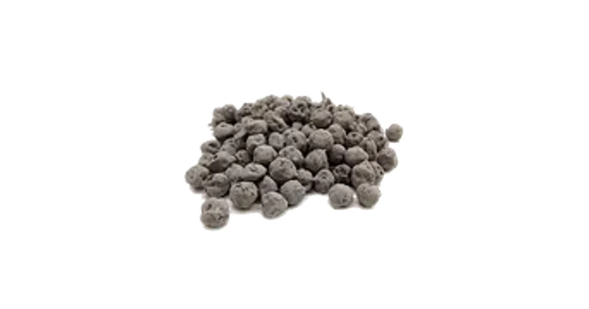
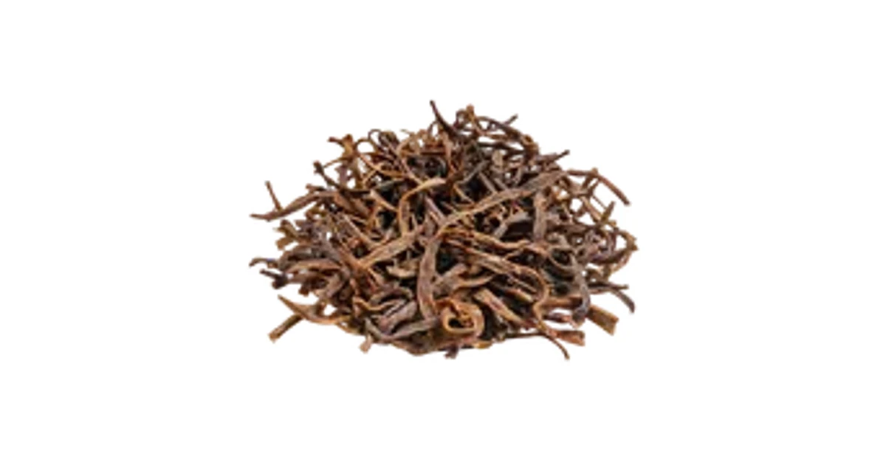

होम
/ खास उपज
राजस्थान की खास उपज
मरुधरा से जुड़ी खास उपज की पहचान और उपयोग की जानकारी।

राजस्थान की खास उपज
केर
Ker Berries
जानकारी पढ़ें
→

राजस्थान की खास उपज
सांगरी
Desert Bean Pods
जानकारी पढ़ें
→
राजस्थान की खास उपज
सुआ पत्ती
Dill Leaves
जानकारी पढ़ें
→